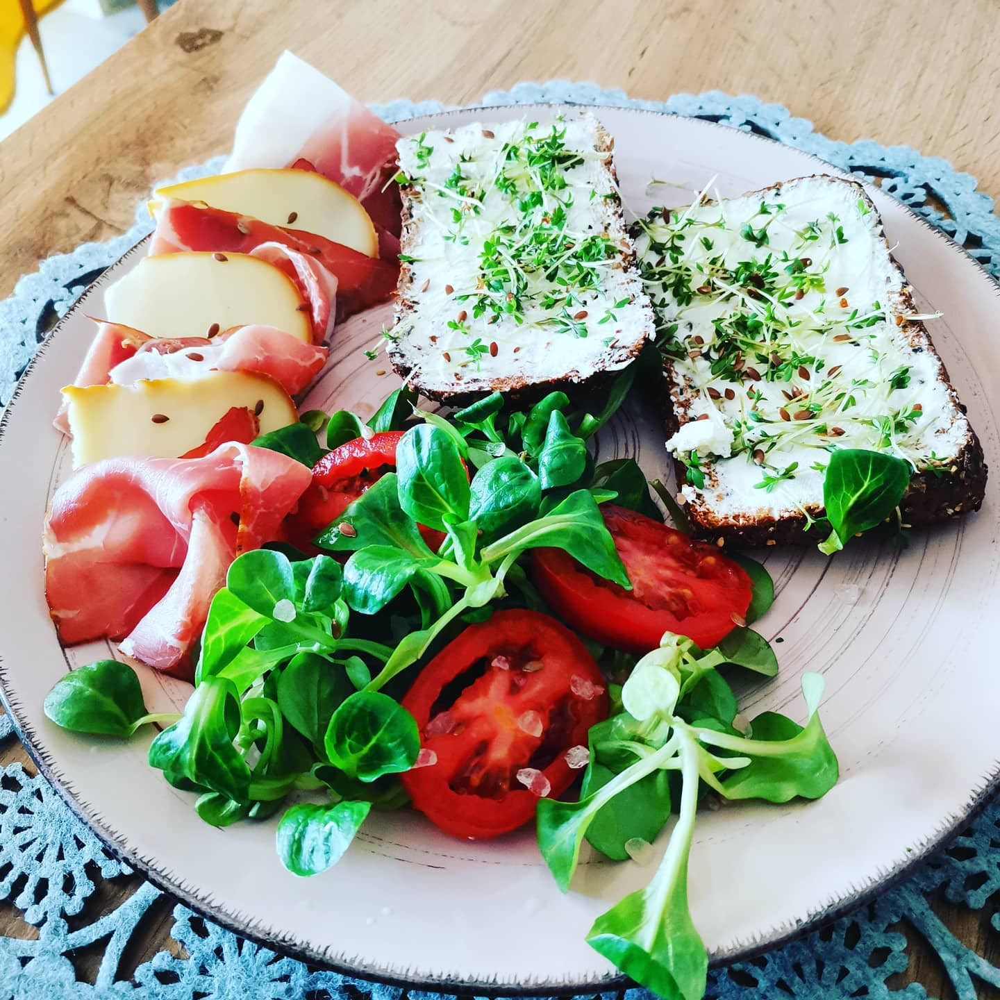

Žerucha podľa @annica.simkova — Normy Jedál
Milujem raňajky takto 🤩
#ranajky #bielkovinovepecivo #lucina #zerucha #udenamozzarela #schwarzwaldskasunka #paradajky #polnicek
#breakfast #foodlover #mozzarela #schwarzwald #ham #lucina #cress #salad #tomatoes